第14讲 · 二重积分
据《张宇考研数学基础30讲·高等数学分册（2026版）》整理 · 覆盖原书 P382–P418
本讲导读
这一讲考研基本以解答题形式出现，主线就三件事：把区域 \(D\) 画对、选好坐标系（直角还是极坐标）、用对称性省计算量。张宇在本讲标了三处硬骨头：对称性（书里直接写"必考题"）、极坐标定限、以及"被积函数积不出就交换积分次序"。定义、中值定理全是第 8 讲定积分的翻版，学之前把变限积分求导捡起来。另外"平面区域 \(D\) 大观"那十几页是画图素材库，图画不对后面全白搭，建议多画几遍——书里原话说这些图"不是背的，而是训练画区域能力的素材"。
站注·真题大数据：本讲（二重积分计算）属于第一梯队考点（新东方近 15 年真题统计，几乎每年必考，第一梯队板块合计约占高数分值 60%+），三大高频题型就是交换积分次序、极坐标、对称性（奇偶性+轮换性）——堪称本讲三大神器。命题趋势上跨章节综合题比重上升、积分计算复杂度持续走高，落到这一讲就是"换序+对称+极坐标在同一道题里连环出手"（例 14.10 那种轮换对称性接变限积分求导的综合题就是样板）。
知识框架
- 一、概念、性质与对称性
- 概念：定义（分割、近似、求和、取极限）、几何意义（曲顶柱体）、物理原型（平面薄板质量）
- 性质：面积公式、可积必有界、线性、可加、保号、估值定理、中值定理
- 普通对称性：关于 \(y\) 轴、\(x\) 轴、原点、\(y=x\) 四种，加轴平移（\(x=a\)、\(y=a\)）推广
- 轮换对称性：直角坐标系下 \(x,y\) 对调区域不变，\(\iint_D f(x,y)=\iint_D f(y,x)\)
- 二、计算
- 直角坐标系：X 型 / Y 型累次积分、定限口诀、交换积分次序、"积不出"清单
- 极坐标系：三换（\(\mathrm{d}\sigma=r\,\mathrm{d}r\,\mathrm{d}\theta\)）、极点在 \(D\) 外 / 边界上 / 内部三种公式、\(\theta\) 与 \(r\) 的定限办法
- 坐标系选择：被积函数 \(f(x^2+y^2)\)、\(f(y/x)\) 型 or 区域为圆或圆的一部分，占其一上极坐标
- 延伸结论：高斯积分 \(\int_0^{+\infty}\mathrm{e}^{-x^2}\mathrm{d}x=\frac{\sqrt\pi}{2}\) 与 \(\int_0^{+\infty}x^2\mathrm{e}^{-x^2}\mathrm{d}x=\frac{\sqrt\pi}{4}\)（\(\Gamma\) 函数）
- 换元法：\(x=x(u,v),y=y(u,v)\)，"三换"+雅可比行列式 \(\left|\frac{\partial(x,y)}{\partial(u,v)}\right|\)，极坐标是其特例
- 三、平面区域 \(D\) 大观（印 P402–411，画图素材库）
- 直角坐标系下直线边界型：正方形、角域、三角形、菱形（\(|x|+|y|\le 1\)）等
- 直角坐标系下曲线边界型：圆、椭圆、抛物线、双曲线（\(xy=c\)）、斜椭圆（\(x^2+y^2+xy\le 1\)）、双纽线（\((x^2+y^2)^2\le 2xy\)）等
- 极坐标方程型：\(r=2a\cos\theta\)、\(r=2a\sin\theta\) 过极点的圆、心形线、双纽线、玫瑰线
- 参数方程型：摆线第一拱、星形线
核心概念与定理
定义14.1 二重积分的概念
和定积分一个套路：分割、近似、求和、取极限，只是这次分割的是平面区域，小区面积 \(\Delta\sigma_i\) 替代了小区间长度 \(\Delta x_i\)：
\[ \iint_D f(x,y)\,\mathrm{d}\sigma=\lim_{\lambda\to 0}\sum_{i=1}^{n}f(\xi_i,\eta_i)\,\Delta\sigma_i, \]
\(\lambda\) 是各小闭区域直径的最大值，极限存在与分法、取点均无关。注意 \(\mathrm{d}\sigma>0\)，这点后面定限时（下限不能超过上限）要用。\(f\) 在有界闭区域 \(D\) 上连续，则二重积分一定存在。
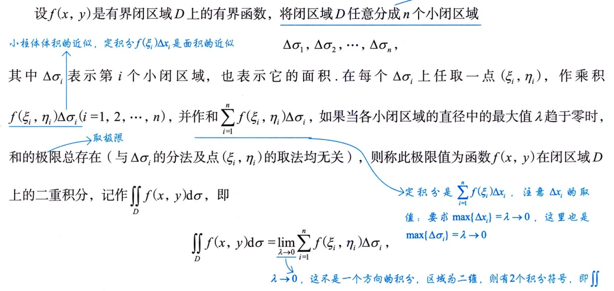
书写定义前专门画了两组图对照：\(y=f(x)\) 是区间 \([a,b]\) 上方的一条曲线（一维），\(z=f(x,y)\) 是区域 \(D\) 上方的一张曲面（三维）——定积分分割线段、二重积分分割平面区域，后面整套理论都是照着这个类比搬过来的。
二重积分的几何意义与物理原型
\(f(x,y)\ge 0\) 时，二重积分是以 \(D\) 为底、\(z=f(x,y)\) 为顶的曲顶柱体体积；\(f\) 有正有负时，积分值等于 \(xOy\) 面上方柱体体积减去下方柱体体积——处理方式和定积分完全类似。书里的说法：用底面积 \(\mathrm{d}\sigma\) 乘以"高" \(f(x,y)\) 得到一根小竖条的体积，再把所有小竖条累加起来。物理原型是平面薄板的质量：先分细，每小块近似认为密度恒定，求和取极限。几何意义还有个常考推论：\(\iint_D\mathrm{d}\sigma=A\) 就是区域的面积（圆、三角形、菱形面积公式要秒出）。
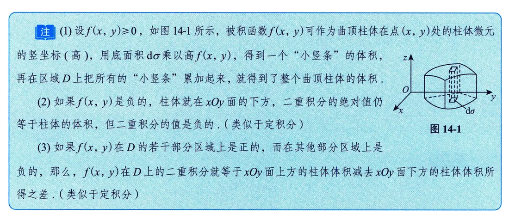
二重积分的七条性质
照抄一元积分的性质，考得最多的是第 1、5、6、7 条：
- 性质1（面积）：\(\displaystyle\iint_D 1\cdot\mathrm{d}\sigma=\iint_D \mathrm{d}\sigma=A\)，\(A\) 为 \(D\) 的面积；
- 性质2：可积函数必有界；
- 性质3（线性）：\(\displaystyle\iint_D [k_1f\pm k_2g]\,\mathrm{d}\sigma=k_1\iint_D f\,\mathrm{d}\sigma\pm k_2\iint_D g\,\mathrm{d}\sigma\)；
- 性质4（可加）：\(D=D_1\cup D_2\)，\(D_1\cap D_2=\varnothing\) 时积分可拆；
- 性质5（保号）：\(f\le g\)（在 \(D\) 上）\(\Rightarrow\iint_D f\,\mathrm{d}\sigma\le\iint_D g\,\mathrm{d}\sigma\)，特殊地 \(\left|\iint_D f\,\mathrm{d}\sigma\right|\le\iint_D|f|\,\mathrm{d}\sigma\)；
- 性质6（估值）：\(mA\le\iint_D f\,\mathrm{d}\sigma\le MA\)，\(M,m\) 为 \(f\) 在 \(D\) 上的最大、最小值；
- 性质7（中值定理）：\(f\) 连续时，存在 \((\xi,\eta)\in D\)，使 \(\iint_D f(x,y)\,\mathrm{d}\sigma=f(\xi,\eta)\,A\)。
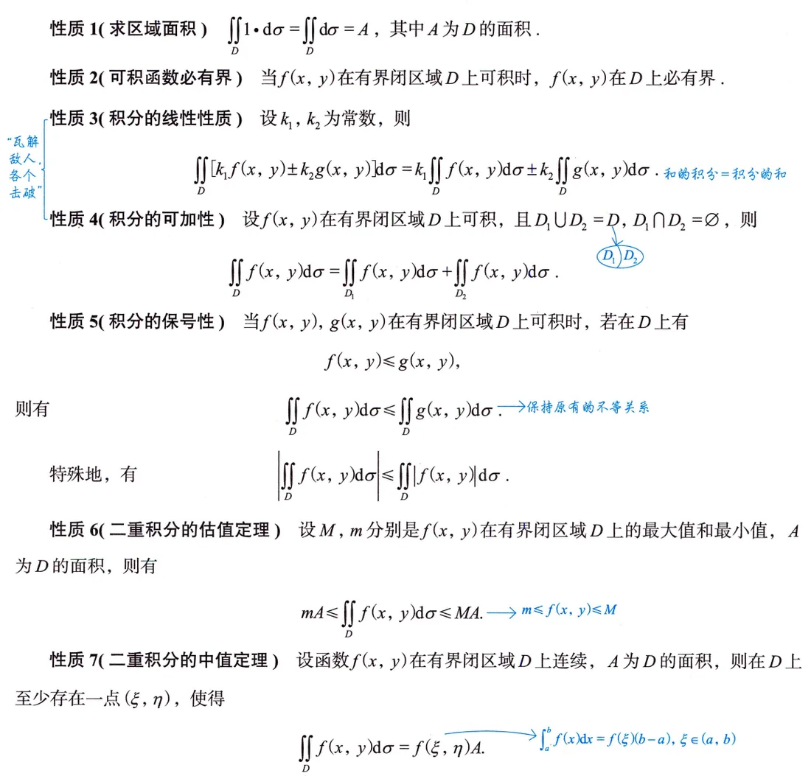
保号性最常用的姿势不是比大小，而是定符号：被积函数在区域上恒 \(\ge 0\)（或不恒为 0）则积分 \(\ge 0\)（且 >0），例 14.3 判 \(J_2,J_3\) 正负全靠它。估值定理则把"算不出的积分"夹在两个数之间（本讲自测题 5 就是样例）。
二重积分的中值定理
中值定理的公式栏写法是 \(\iint_D f\,\mathrm{d}\sigma=f(\xi,\eta)\cdot S_D\)，\(S_D\) 是 \(D\) 的面积，\((\xi,\eta)\in D\)。它管两类题：一是被积函数抽象或难算、区域又在收缩/扩张时，把积分换成"面积 \(\times\) 一点的函数值"（例 14.2）；二是与保号性配合定符号。用的时候记牢 \((\xi,\eta)\) 是依赖区域 \(D\) 的，区域变了点也变，所以 \(t\to 0^+\) 时 \((\xi,\eta)\to(0,0)\)、\(f(\xi,\eta)\to f(0,0)\) 这一串连续性要交代清楚。
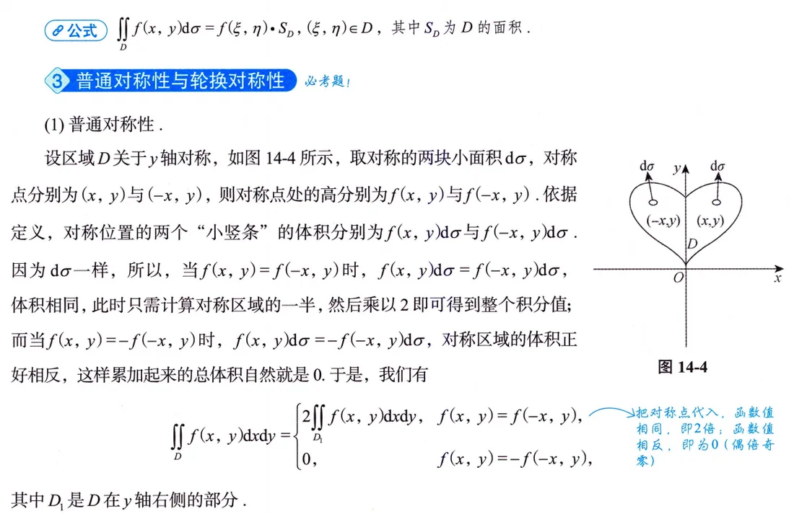
普通对称性（书里标了"必考题"）
逻辑很简单：\(D\) 对称的两块上 \(\mathrm{d}\sigma\) 一样，把对称点代入函数，相等就取一半区域乘 2，相反就正负抵消为 0。口诀：看区域对称，代入验函数；相等取 2 倍，相反直接 0。
- \(D\) 关于 \(y\) 轴对称（\(D_1\) 为右半）：\(f(x,y)=f(-x,y)\Rightarrow\) 积分 \(=2\iint_{D_1}f\,\mathrm{d}\sigma\)；\(f(x,y)=-f(-x,y)\Rightarrow\) 积分 \(=0\)；
- \(D\) 关于 \(x\) 轴对称（\(D_1\) 为上半）：用 \(f(x,-y)\) 判断；
- \(D\) 关于原点对称：用 \(f(-x,-y)\) 判断；
- \(D\) 关于 \(y=x\) 对称：用 \(f(y,x)\) 判断，特别地 \(f(x,y)=-f(y,x)\) 时积分为 0。
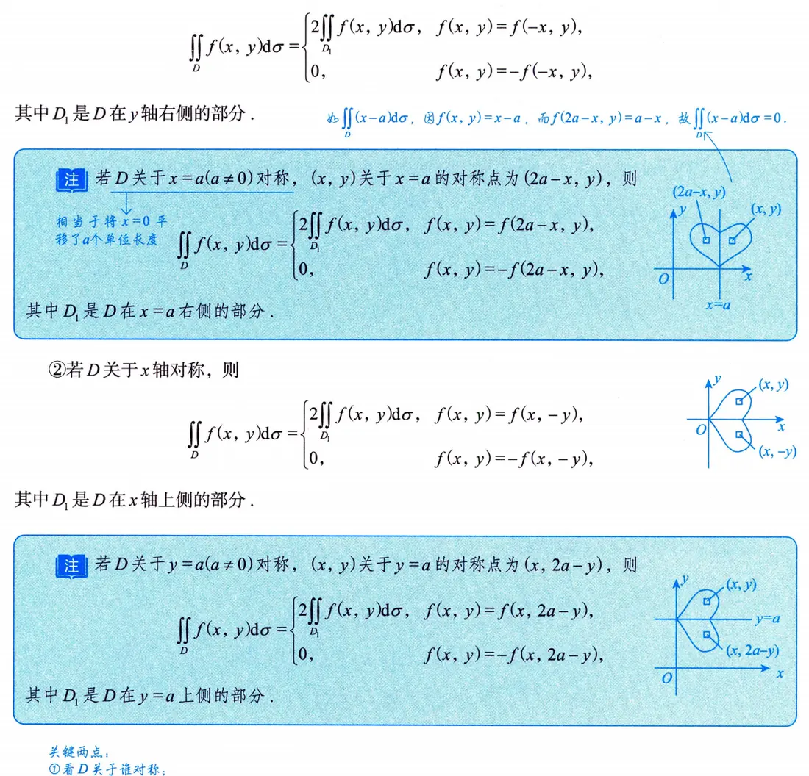
书上还配了小例子：\(D\) 关于 \(y\) 轴对称时 \(\iint_D(x-a)\,\mathrm{d}\sigma=0\)（\(a\) 为常数），就因为 \(x-a\) 代入 \((-x,y)\) 后变号。做题时先扫一眼被积函数里的"单项奇性"：\(x\)、\(y\)、\(xy\)、\(\sin x\,\mathrm{e}^{y^2}\) 这类因子，区域一对称就归零，往往大半个积分瞬间消失。
对称轴平移的推广（\(x=a\)、\(y=a\)）
对称轴不必是坐标轴。\(D\) 关于直线 \(x=a\,(a\ne 0)\) 对称时，对称点是 \((2a-x,\,y)\)；关于 \(y=a\) 对称时是 \((x,\,2a-y)\)，判断方式不变：代入后相等取 2 倍、相反取 0。比如 \(D\) 关于 \(x=1\) 对称，则 \(\iint_D(x-1)\,\mathrm{d}\sigma=0\)。这推广在圆 \((x-a)^2+y^2\le R^2\)、矩形 \([a-l,a+l]\times[c,d]\) 这类偏心区域上最常用，别一看圆心不在原点就放弃对称性。
轮换对称性
条件：直角坐标系下，把 \(x,y\) 对调后区域 \(D\) 不变（即 \(D\) 关于 \(y=x\) 对称），则
\[ \iint_D f(x,y)\,\mathrm{d}\sigma=\iint_D f(y,x)\,\mathrm{d}\sigma . \]
道理：积分值与用什么字母表示无关，对调字母只是换了个写法。应用场景是 \(f(x,y)\) 本身难算、但 \(f(x,y)+f(y,x)\) 很简单：
\[ I=\iint_D f(x,y)\,\mathrm{d}\sigma=\frac{1}{2}\iint_D [f(x,y)+f(y,x)]\,\mathrm{d}\sigma . \]
特别地，若 \(f(x,y)+f(y,x)=a\)（常数），则 \(I=\dfrac{a}{2}S_D\)。
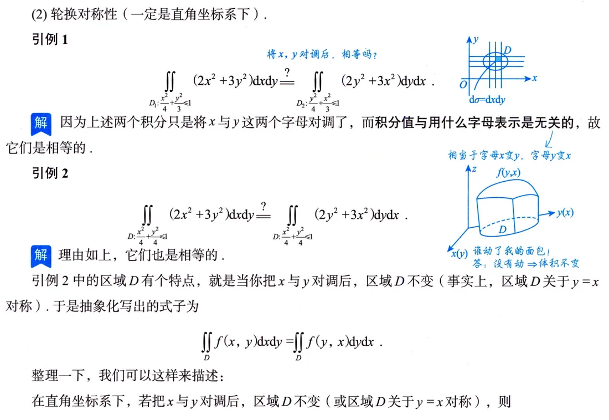
书上配套的典型用法：\(D=\{(x,y)\mid x^2+y^2\le 1,\ x>0,\ y>0\}\) 时，
\[ \iint_D \frac{a\sqrt{f(x)}+b\sqrt{f(y)}}{\sqrt{f(x)}+\sqrt{f(y)}}\,\mathrm{d}\sigma =\frac{a+b}{2}\cdot\Bigl(\tfrac14\pi\cdot 1^2\Bigr)=\frac{(a+b)\pi}{8}, \]
对调后分式分子互换，与原式相加恰好凑出 \(a+b\)，再乘 \(D\) 的面积（四分之一圆）。最常轮换的一对是 \(\iint_D x^2\,\mathrm{d}\sigma=\iint_D y^2\,\mathrm{d}\sigma\)（\(D\) 关于 \(y=x\) 对称时），例 14.8 靠它把 \(x^2+\frac{y^2}{2}\) 凑成平方和。
普通对称性④与轮换对称性的区分
两者都要求 \(D\) 关于 \(y=x\) 对称，非常容易混：普通对称性④看的是 \(f(x,y)\) 与 \(f(y,x)\) 相等还是相反（相等取一半区域乘 2，相反为 0）；轮换对称性看的是 \(f(x,y)+f(y,x)\) 是否简单（目的是凑和化简）。当 \(f(x,y)=-f(y,x)\) 时两者是一回事（都得 0）。判断顺序固定：先查普通对称性（相等/相反），不满足再看 \(f(x,y)+f(y,x)\) 好不好算，例 14.4 的 \(g(u,v)=\frac{v\ln\sqrt{u^2+v^2}}{u+v}\) 就是"既不相等也不相反、但相加简单"的典型。
直角坐标计算：X 型与 Y 型
直角坐标的标志是 \(\mathrm{d}\sigma=\mathrm{d}x\,\mathrm{d}y\)，用平行于坐标轴的直线切区域。定限口诀：后积先定限，限内画条线，先交写下限，后交写上限。
- X 型区域（\(\varphi_1(x)\le y\le\varphi_2(x),\ a\le x\le b\)，后积 \(x\)）：
\[ \iint_D f(x,y)\,\mathrm{d}\sigma=\int_a^b\mathrm{d}x\int_{\varphi_1(x)}^{\varphi_2(x)}f(x,y)\,\mathrm{d}y ; \]
- Y 型区域（\(\psi_1(y)\le x\le\psi_2(y),\ c\le y\le d\)，后积 \(y\)）：
\[ \iint_D f(x,y)\,\mathrm{d}\sigma=\int_c^d\mathrm{d}y\int_{\psi_1(y)}^{\psi_2(y)}f(x,y)\,\mathrm{d}x . \]
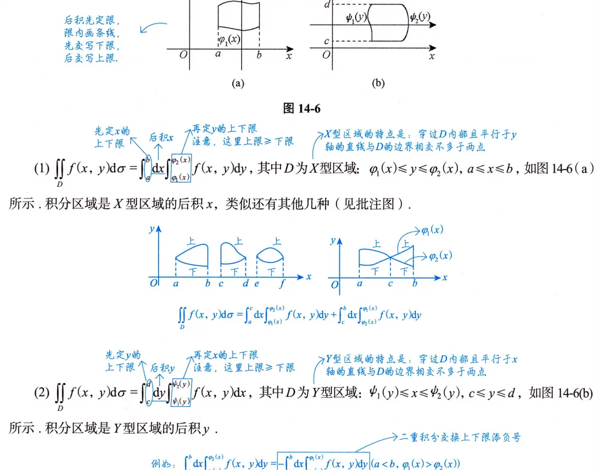
因为 \(\mathrm{d}x>0,\ \mathrm{d}y>0\)，所有下限必须不超过上限；交换上下限要添负号。选次序的原则：\(f\) 易对 \(y\) 积分或 \(D\) 是 X 型，就先 \(y\) 后 \(x\)；\(f\) 易对 \(x\) 积分或 \(D\) 是 Y 型，就先 \(x\) 后 \(y\)。两条原则冲突时优先保证被积函数积得出，区域复杂可以拆块（性质4 可加性兜底）。定限的关键是把 \(D\) 的边界图画出来；图不好画时，写出 \(D\) 的不等式组再定限（例 14.9 就是范本）。
交换积分次序与"积不出"清单
遇到下面这些积分，原函数不是初等函数，一律先交换积分次序再动手：
\[ \int\frac{\sin x}{x}\mathrm{d}x,\quad \int\frac{\cos x}{x}\mathrm{d}x,\quad \int\frac{\ln(1+x)}{x}\mathrm{d}x,\quad \int\frac{\mathrm{d}x}{\ln x},\quad \int\sin x^2\,\mathrm{d}x,\quad \int\cos x^2\,\mathrm{d}x, \] \[ \int\sin\frac1x\,\mathrm{d}x,\quad \int\cos\frac1x\,\mathrm{d}x,\quad \int\frac{\tan x}{x}\mathrm{d}x,\quad \int\frac{\mathrm{e}^x}{x}\mathrm{d}x,\quad \int\tan x^2\,\mathrm{d}x,\quad \int\mathrm{e}^{ax^2+bx+c}\,\mathrm{d}x\ (a\ne 0). \]
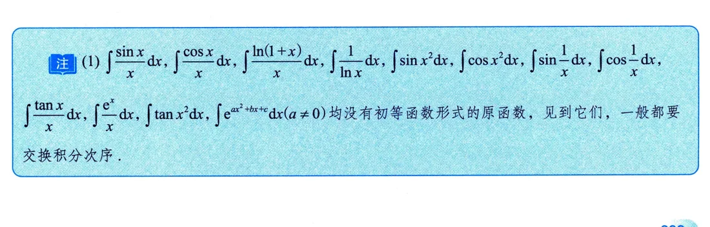
换序的操作流程固定三步：由给定的累次积分还原区域 \(D\)（把每个变量的范围抄成不等式组）→ 画图 → 按新次序重新投影定限，边界曲线要按新变量反解（如 \(x=\sqrt y\) 反写成 \(y=x^2\)，\(\sin x=y\) 在 \([\frac\pi2,\pi]\) 上反解为 \(x=\pi-\arcsin y\)）。换序后区域若要拆块，就拆成几个 X 型/Y 型分别写再相加。
极坐标计算（三换与极点三种情形）
被积函数与区域都"中心对称"时上极坐标。三换：\(x=r\cos\theta\)，\(y=r\sin\theta\)，\(\mathrm{d}\sigma=r\,\mathrm{d}r\,\mathrm{d}\theta\)（面积微元近似看成小矩形，长 \(r\,\mathrm{d}\theta\) 宽 \(\mathrm{d}r\)，这个 \(r\) 最容易丢，书里专门加了旁注）。一般先积 \(r\) 后积 \(\theta\)。
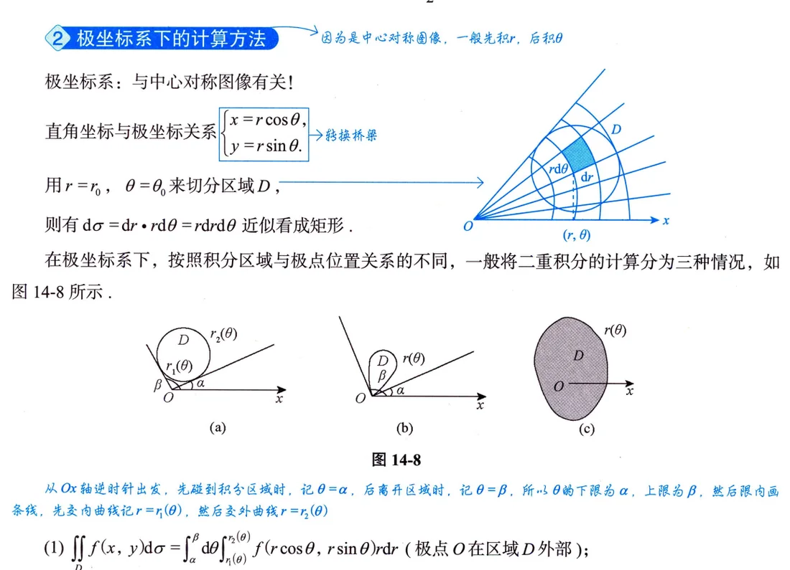
极点位置决定公式：
\[ \iint_D f\,\mathrm{d}\sigma=\int_{\alpha}^{\beta}\mathrm{d}\theta\int_{r_1(\theta)}^{r_2(\theta)}f(r\cos\theta,\,r\sin\theta)\,r\,\mathrm{d}r \quad(\text{极点 } O \text{ 在 } D \text{ 外部})， \]
\[ \iint_D f\,\mathrm{d}\sigma=\int_{\alpha}^{\beta}\mathrm{d}\theta\int_{0}^{r(\theta)}f(r\cos\theta,\,r\sin\theta)\,r\,\mathrm{d}r \quad(\text{极点 } O \text{ 在 } D \text{ 边界上})， \]
\[ \iint_D f\,\mathrm{d}\sigma=\int_{0}^{2\pi}\mathrm{d}\theta\int_{0}^{r(\theta)}f(r\cos\theta,\,r\sin\theta)\,r\,\mathrm{d}r \quad(\text{极点 } O \text{ 在 } D \text{ 内部}) . \]
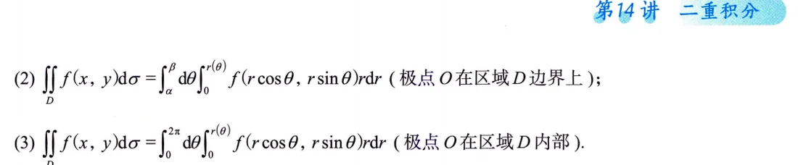
定 \(\theta\) 的办法：从 \(Ox\) 轴逆时针出发，先碰到区域时记 \(\theta=\alpha\)（下限），离开区域时记 \(\theta=\beta\)（上限）；然后限内画条射线，先交的（内）曲线记 \(r=r_1(\theta)\)，后交的（外）曲线记 \(r=r_2(\theta)\)。极点在内部时 \(\theta\) 扫满 \([0,2\pi]\)；在边界上时从进入区域的那条边界射线量到离开的那条。先积 \(\theta\) 后积 \(r\) 只在特殊区域（如圆心在原点的圆环）才方便，一般不动这个次序。
极坐标与直角坐标怎么选
书里给的两条判断依据：一看被积函数是否为 \(f(x^2+y^2)\)、\(f\!\left(\dfrac{y}{x}\right)\)、\(f\!\left(\dfrac{x}{y}\right)\) 等形式；二看积分区域是否为圆或圆的一部分。至少满足其一就优先极坐标，否则优先直角坐标——主要看被积函数那条。
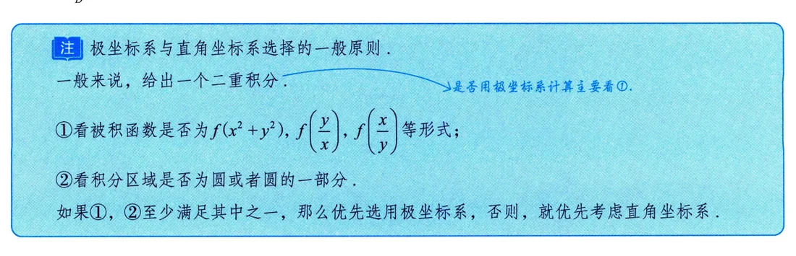
两条打架时听被积函数的：区域是圆但函数不是平方和，先想轮换对称性凑 \(x^2+y^2\)（例 14.8）；函数含 \(x^2+y^2\) 但区域是方的，硬上极坐标会把区域搞成变限 \(r\)（要按 \(\theta\) 分段），多数时候不划算。另外 \(r=2a\cos\theta\)、\(r=2a\sin\theta\) 这类"过极点的圆"出现在边界上时，极坐标几乎是唯一选择（习题 14.11 的形状）。
高斯积分与两个必背反常积分
\(\mathrm{e}^{-x^2}\) 没有初等原函数，一维积不动；利用"积分与字母用谁无关"把 \(I^2\) 写成二重积分，再上极坐标就出来了（过程见例 14.11）：
\[ \int_0^{+\infty}\mathrm{e}^{-x^2}\mathrm{d}x=\frac{\sqrt\pi}{2},\qquad \int_0^{+\infty}x^2\mathrm{e}^{-x^2}\mathrm{d}x=\frac{\sqrt\pi}{4}. \]
第二个用 \(\Gamma\) 函数算最快（例 14.12）：令 \(t=x^2\)，\(\int_0^{+\infty}x^2\mathrm{e}^{-x^2}\mathrm{d}x=\frac12\Gamma\!\left(\frac32\right)=\frac12\cdot\frac12\Gamma\!\left(\frac12\right)=\frac{\sqrt\pi}{4}\)；不想用 \(\Gamma\) 就分部积分绕 \(\int x\,\mathrm{d}(\mathrm{e}^{-x^2})\)，麻烦一点。这两个数在概率论（正态分布的矩）里还会见面，数一数三务必记牢。
二重积分的换元法与雅可比行列式
一般换元 \(x=x(u,v),\ y=y(u,v)\) 要求是一对一映射、有一阶连续偏导且雅可比行列式不为零，"三换"：换被积函数、换积分区域、换微元 \(\mathrm{d}x\,\mathrm{d}y\to\left|\dfrac{\partial(x,y)}{\partial(u,v)}\right|\mathrm{d}u\,\mathrm{d}v\)：
\[ \iint_{D_{xy}}f(x,y)\,\mathrm{d}x\,\mathrm{d}y =\iint_{D_{uv}}f[x(u,v),\,y(u,v)]\left|\frac{\partial(x,y)}{\partial(u,v)}\right|\mathrm{d}u\,\mathrm{d}v . \]
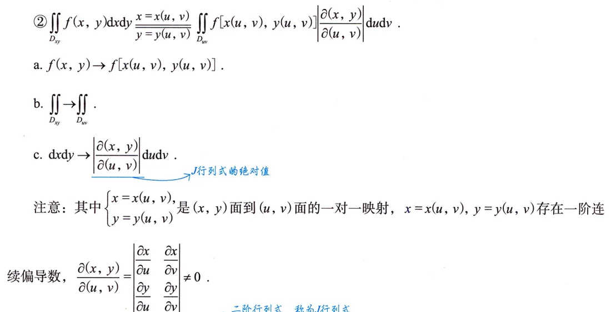
取 \(x=r\cos\theta,\ y=r\sin\theta\) 算出 \(|J|=r\)，就退回极坐标公式——所以极坐标只是换元法的特例。书里标注此法"供参考，若能够用上，可直接使用，不必证明"。最常用的搭配是 \(u=x+y,\ v=y\)（或 \(v=x\)）：当被积函数出现 \(\mathrm{e}^{\frac{y}{x+y}}\)、\(\mathrm{e}^{\frac{x}{x+y}}\) 这种指数上"头重脚轻"的分式时特别有效（例 14.15，结果 \(\frac12(\mathrm{e}-1)\)）。
平面区域 \(D\) 大观（印 P402–411）
书里原话："要想正确计算二重积分，准确画出平面区域 \(D\) 是必不可少的基本功"，于是本讲末尾给了整整十页区域图册，"考生应多画、多练，这些图不是背的，而是训练画区域能力的素材"。四大家族：
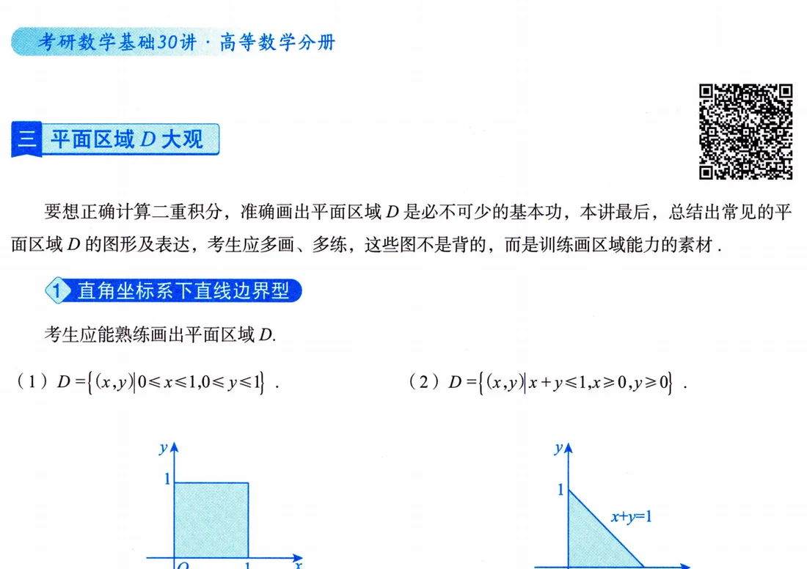
- 直线边界型：单位正方形 \(0\le x\le1,\,0\le y\le1\)；角域 \(0\le x\le1,\ \frac{\sqrt3}{3}x\le y\le\sqrt3x\)（两条 30°、60° 直线夹的带）；三角形 \(x\le y\le1\)、\(x\le y\le 2x\)；菱形 \(|x|+|y|\le 1\)；正方形挖角 \(0\le x,y\le1,\ |x-y|\le\frac12\)；\(0\le x,y\le3,\ \frac{\sqrt3}{3}x\le y\le\sqrt3x\) 等。角域那几个正是极坐标 \(\theta\) 上下限的直角版本。
- 曲线边界型：圆 \(x^2+y^2\le 1\)、椭圆 \(\frac{x^2}{a^2}+\frac{y^2}{b^2}\le 1\)；抛物线家族 \(x^2\le y\le\sqrt x\)、\(0\le y\le\frac{x^2}{4}\)、\(x-1\le y\le\frac{x^2}{4}\)、\(\sqrt x\le y\le 2\)、\(\frac{x^2}{2}\le y\le 2x\)、\(2x\le y\le x^2\)、\(x^2-2x\le y\le 0\)；直线混曲线 \(2-x\le y\le\sqrt{2x-x^2}\)、\(-\sqrt{1-x^2}\le y\le 1-x\)、\(x^2\le y\le\sqrt{1-x^2}\)；双曲线环 \(\frac{1}{2}\le xy\le 1,\ x\le y\le\sqrt3x\) 型；斜椭圆 \(x^2+y^2+xy\le 1\)；双纽线的直角形式 \((x^2+y^2)^2\le 2xy\)。
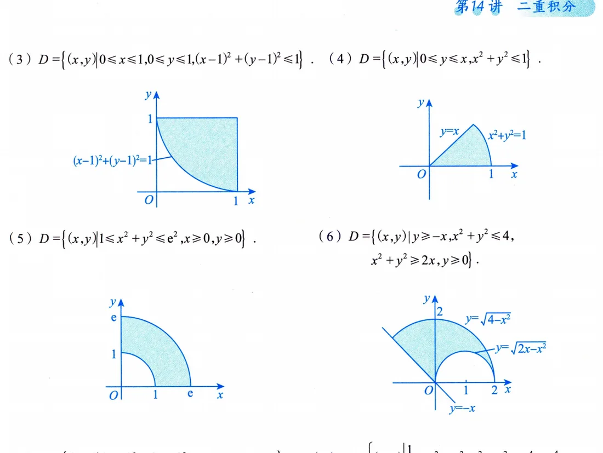
- 极坐标方程型：过极点的圆 \(r\le 2a\cos\theta\)（圆心 \((a,0)\)）、\(r\le 2a\sin\theta\)（圆心 \((0,a)\)）；心形线 \(r=a(1+\cos\theta)\)；双纽线 \(r^2=a^2\cos2\theta\)；玫瑰线等。这些是极坐标定限的图形底座。
- 参数方程型：摆线第一拱 \(\begin{cases}x=a(t-\sin t)\\ y=a(1-\cos t)\end{cases}\) 与 \(x\) 轴围成；星形线 \(x^{\frac23}+y^{\frac23}=a^{\frac23}\)（参数式 \(x=a\cos^3 t,\ y=a\sin^3 t\)）与坐标轴围成。
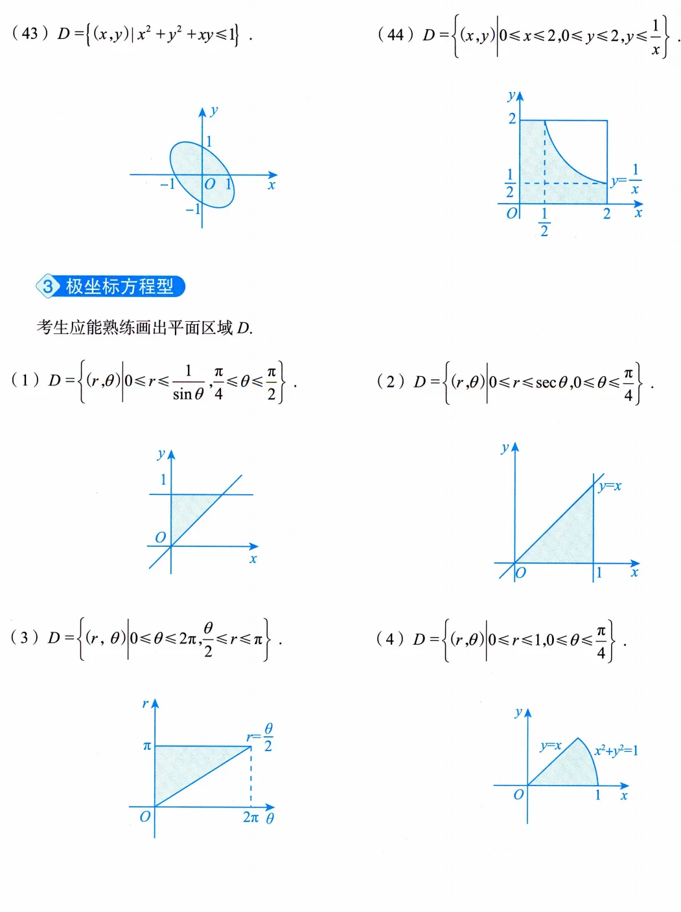
画陌生区域的通法（承接例 14.9 的注）：一看边界类型（直线/圆锥曲线/极坐标方程），二找交点（边界两两联立），三判对称性（关于坐标轴、\(y=x\)），四连草图。圆锥曲线一般式 \(Ax^2+Bxy+Cy^2+Dx+Ey+F=0\)（\(B\ne0\)）画不准时用二次型正交变换转轴（线性代数联动），考场上至少用描点法：找与坐标轴、\(y=x\) 的交点连一圈。
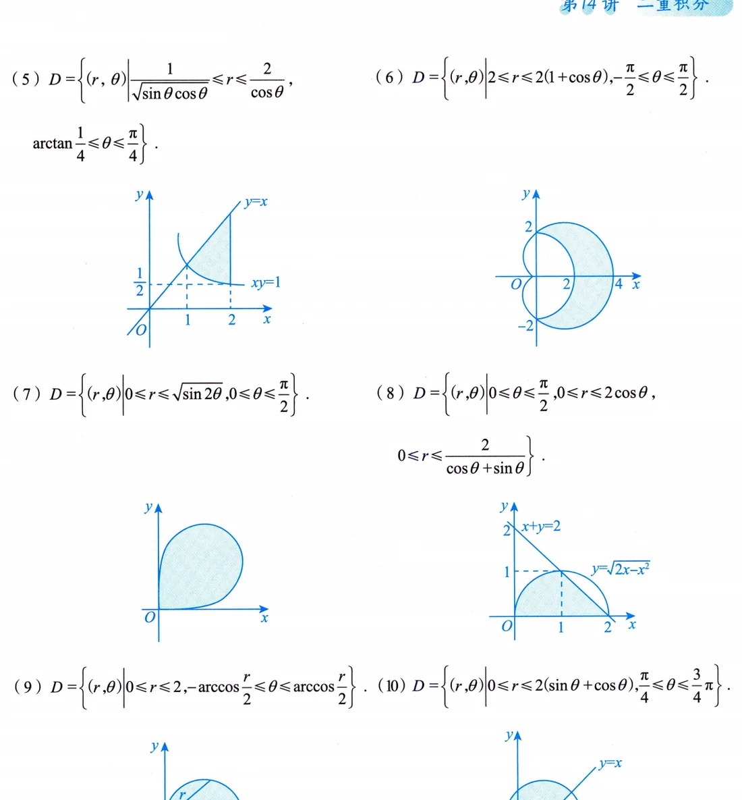
典型例题精讲
例 14.1 同一函数在不同区域上比大小
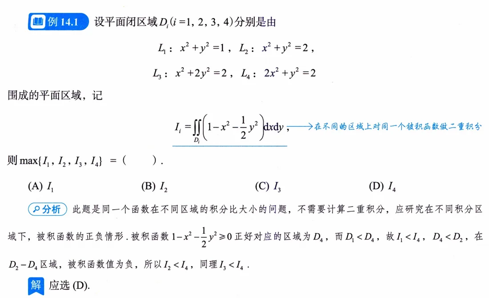
思路：同一个被积函数在不同区域积分比大小，不用硬算，看被积函数的正负分区就行。
要点：\(f=1-x^2-\frac12 y^2\ge 0\) 对应的区域恰好是 \(D_4\)（\(L_4:\ 2x^2+y^2=2\) 内部 \(x^2+\frac{y^2}{2}<1\)）。\(D_1\subset D_4\)，故 \(I_1<I_4\)；\(D_2\)、\(D_3\) 都比 \(D_4\) 多出使 \(f<0\) 的部分（用可加性拆开看符号），故 \(I_2<I_4\)，\(I_3<I_4\)。所以 \(\max\{I_1,I_2,I_3,I_4\}=I_4\)，选 (D)。
注：张宇这题的方法总结值得记——找让二重积分最大的区域，就是找被积函数大于等于零的区域，多掺一块 \(f<0\) 的地方只会把积分拉低。
例 14.2 动态区域 + 中值定理求导数
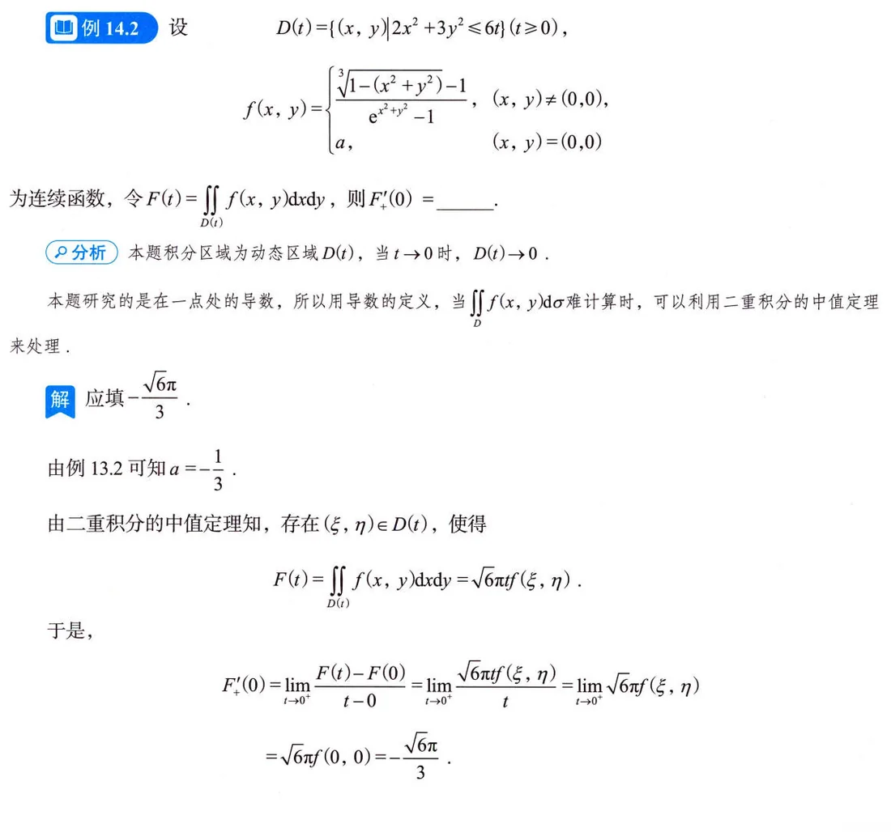
思路：\(D(t)=\{(x,y)\mid 2x^2+3y^2\le 6t\}\) 随 \(t\) 收缩，求 \(F'_+(0)\) 用导数定义；\(\iint f\,\mathrm{d}\sigma\) 本身难算，用中值定理处理。
要点：\(D(t)\) 是椭圆 \(\frac{x^2}{3t}+\frac{y^2}{2t}=1\)，面积 \(=\pi\sqrt{3t}\cdot\sqrt{2t}=\sqrt{6}\pi t\)。由中值定理存在 \((\xi,\eta)\in D(t)\)，使 \(F(t)=\sqrt{6}\pi t\,f(\xi,\eta)\)。于是
\[ F'_+(0)=\lim_{t\to 0^+}\frac{F(t)-F(0)}{t}=\sqrt{6}\pi f(0,0)=-\frac{\sqrt{6}\pi}{3}, \]
其中 \(f(0,0)=a=-\frac13\) 由 \(f\) 连续求得（书里引用例 13.2 的结果）；\(t\to 0^+\) 时 \((\xi,\eta)\) 被 \(D(t)\) 挤向原点，所以 \(f(\xi,\eta)\to f(0,0)\)。
注：被积函数命制成抽象函数时同样这么办，书里的注给了一个 \(F(t)=\iint_{D(t)}f''_{xy}\,\mathrm{d}x\,\mathrm{d}y\) 求 \(F'_+(0)\) 的变式，答案是 0。套路：面积好算 + 函数难算 = 中值定理 + 导数定义。
例 14.3 对称性定符号比大小
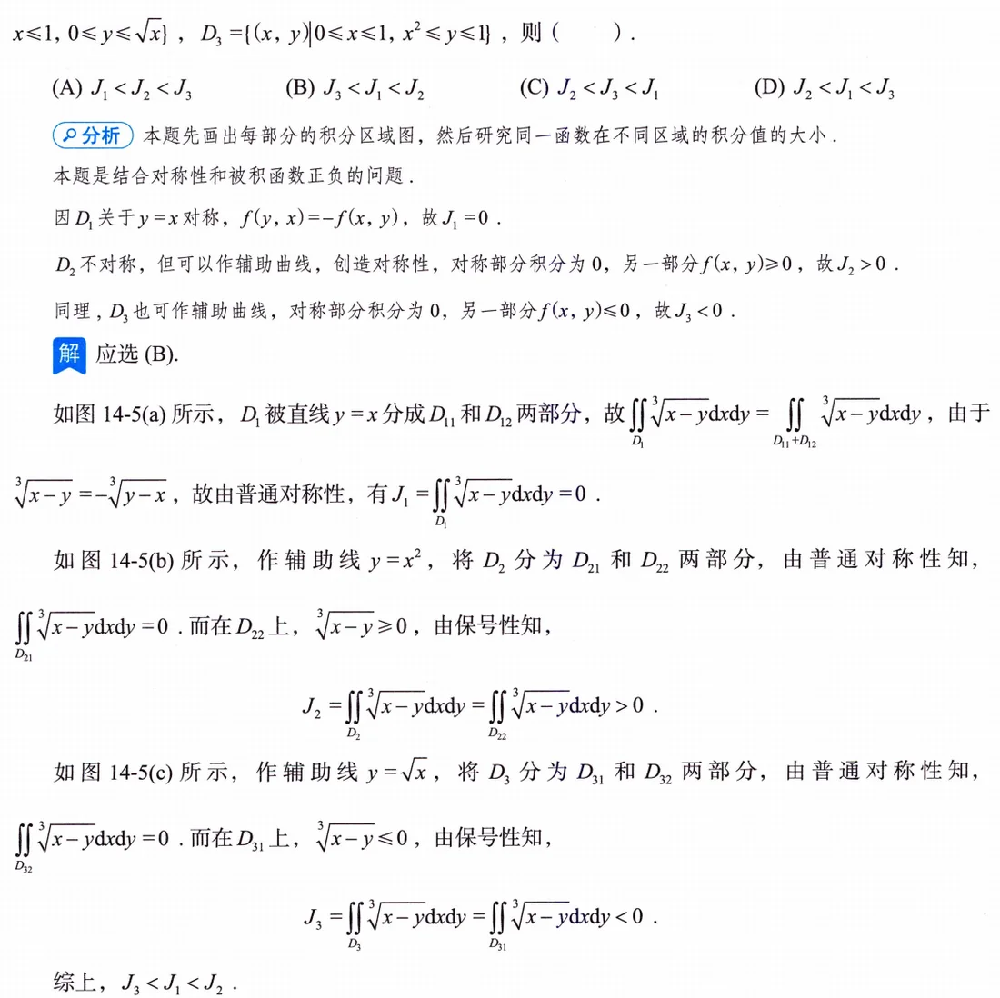
思路：先画三个区域，再全靠对称性+\(\sqrt[3]{x-y}\) 的奇偶性判断每个积分的符号，不用算出数值。
要点：\(D_1\) 是单位正方形，关于 \(y=x\) 对称，且 \(\sqrt[3]{x-y}=-\sqrt[3]{y-x}\)，故 \(J_1=0\)。\(D_2\) 本身不对称，作辅助线 \(y=x^2\) 分成关于 \(y=x\) 对称的两块，对称部分积分为 0，剩下 \(D_{22}\) 上 \(\sqrt[3]{x-y}\ge 0\)，由保号性 \(J_2>0\)；同理 \(D_3\) 作辅助线 \(y=\sqrt x\)，剩下部分上函数 \(\le 0\)，\(J_3<0\)。综上 \(J_3<J_1<J_2\)，选 (B)。
注：书里的方法总结原话——遇到二重积分的题目，首先应考虑对称性，看能否化简。区域不对称时别急着放弃，作辅助线（往往是 \(y=x\) 或边界曲线的反函数）切出对称块再分块处理，是这题教的手艺。
例 14.4 轮换对称性化简抽象积分
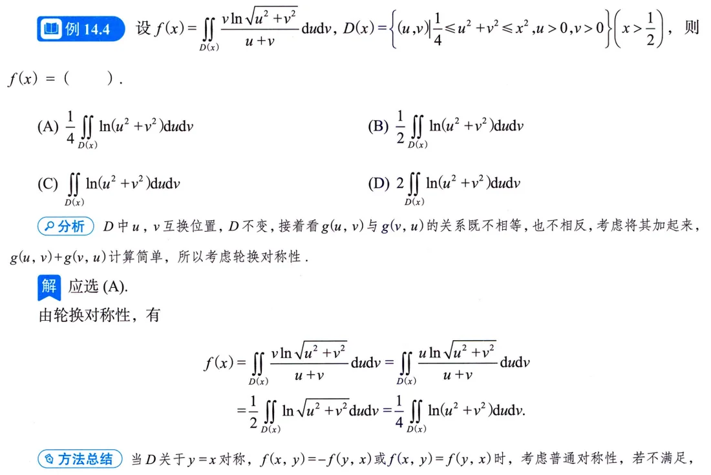
思路：\(D(x)\) 中 \(u,v\) 互换位置区域不变；\(g(u,v)=\dfrac{v\ln\sqrt{u^2+v^2}}{u+v}\) 与 \(g(v,u)\) 既不相等也不相反，但相加简单，考虑轮换对称性。
要点：
\[ f(x)=\iint_{D(x)}\frac{v\ln\sqrt{u^2+v^2}}{u+v}\,\mathrm{d}u\,\mathrm{d}v =\frac12\iint_{D(x)}\ln\sqrt{u^2+v^2}\,\mathrm{d}u\,\mathrm{d}v =\frac14\iint_{D(x)}\ln(u^2+v^2)\,\mathrm{d}u\,\mathrm{d}v, \]
选 (A)。对调后分子 \(v\ln\sqrt{u^2+v^2}\) 变 \(u\ln\sqrt{u^2+v^2}\)，两式相加恰好约掉分母 \(u+v\)，剩下 \(\ln\sqrt{u^2+v^2}\)。
注：判断顺序固定——先查普通对称性（相等/相反），不满足再看 \(f(x,y)+f(y,x)\) 是否简单。这题的结论例 14.10 会直接引用。
例 14.5 交换积分次序（含反三角反解）
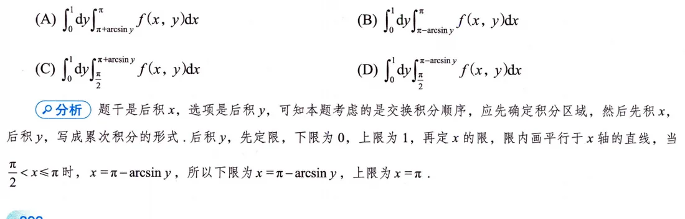
思路：题干后积 \(x\)、选项后积 \(y\)，先由给定的累次积分还原区域 \(D\)，再按新次序定限。
要点：\(D=\{(x,y)\mid \sin x<y<1,\ \pi/2<x<\pi\}\)。后积 \(y\)：\(0\le y\le 1\)；左边界由 \(\pi/2<x\le\pi\) 反解 \(\sin x=y\) 得 \(x=\pi-\arcsin y\)，右边界 \(x=\pi\)。所以
\[ \int_{\pi/2}^{\pi}\mathrm{d}x\int_{\sin x}^{1}f(x,y)\,\mathrm{d}y =\int_0^1\mathrm{d}y\int_{\pi-\arcsin y}^{\pi}f(x,y)\,\mathrm{d}x, \]
选 (B)。
注：在 \([\pi/2,\pi]\) 上反解 \(\sin x=y\) 要用 \(x=\pi-\arcsin y\) 而不是 \(\arcsin y\)（\(\arcsin\) 值域只在 \([-\frac\pi2,\frac\pi2]\)），这里最容易绕晕。画图时把 \(y=\sin x\) 在 \([\frac\pi2,\pi]\) 上那一段拱形描出来，上限 \(y=1\) 的位置一目了然。
例 14.6 交换次序 + 等价无穷小定参数
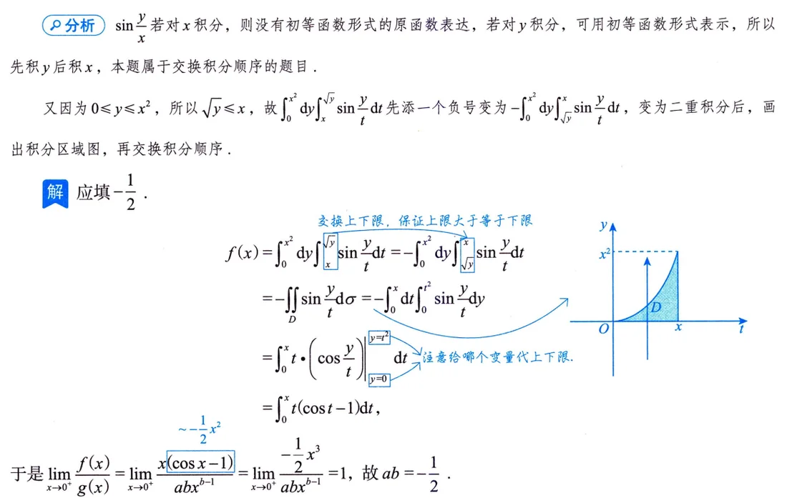
思路：\(\dfrac{\sin\frac{y}{t}}{t}\) 对 \(t\) 积不出（无初等原函数），先交换积分次序；再算 \(f(x)\) 的等价无穷小与 \(ax^b\) 对照。
要点：因为 \(0\le y\le x^2\) 时 \(\sqrt y\le x\)，内层先添负号变成 \(-\int_0^{x^2}\mathrm{d}y\int_{\sqrt y}^{x}\)，化为二重积分后交换次序：
\[ f(x)=-\iint_D\sin\frac{y}{t}\,\mathrm{d}\sigma =-\int_0^x\mathrm{d}t\int_0^{t^2}\sin\frac{y}{t}\,\mathrm{d}y =\int_0^x t(\cos t-1)\,\mathrm{d}t , \]
其中内层 \(\int_0^{t^2}\sin\frac{y}{t}\,\mathrm{d}y=t\bigl[1-\cos t\bigr]\)（把 \(\frac1t\) 当常数提出去，\(\int\sin\frac{y}{t}\,\mathrm{d}y=-t\cos\frac yt+C\)，书里把这个公式单独列了框）。由 \(\cos t-1\sim -\frac{t^2}{2}\) 得 \(f(x)\sim -\dfrac{x^4}{8}\)，即 \(a=-\frac18,\ b=4\)，故 \(ab=-\dfrac12\)。
注：书中注 (2) 也直接给了这组常数 \(a=-\frac18,\ b=4\)；注 (1) 那张"积不出"清单建议整张背下来。
例 14.7 换序救"积不出"
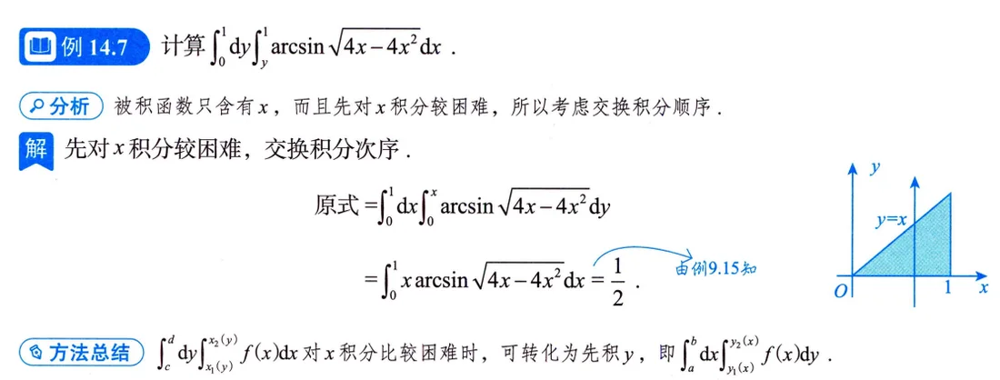
思路：被积函数 \(\arcsin\sqrt{4x-4x^2}\) 只含 \(x\)，先对 \(x\) 积分很困难，交换积分次序。
要点：区域是由 \(y=x\) 与 \(x=1\)、\(y=0\) 围成的三角形，换序后
\[ \text{原式}=\int_0^1\mathrm{d}x\int_0^x\arcsin\sqrt{4x-4x^2}\,\mathrm{d}y =\int_0^1 x\,\arcsin\sqrt{4x-4x^2}\,\mathrm{d}x=\frac12 . \]
换序后内层对 \(y\) 积分直接得到因子 \(x\)（区间长度），把"积不出的函数"变成被乘数，再对 \(x\) 分部/配方（\(4x-4x^2=1-(2x-1)^2\)）就能落进反三角公式。
注：书里顺手给了两个要记的公式：\(\displaystyle\int_0^1\arcsin\sqrt{1-x^2}\,\mathrm{d}x=1\)，\(\displaystyle\int_0^1 x\,\arcsin\sqrt{4x-4x^2}\,\mathrm{d}x=\frac12\)。习题 14.11 正是用到同款根号分式。
例 14.8 轮换对称性 + 极坐标（复习标杆之一）
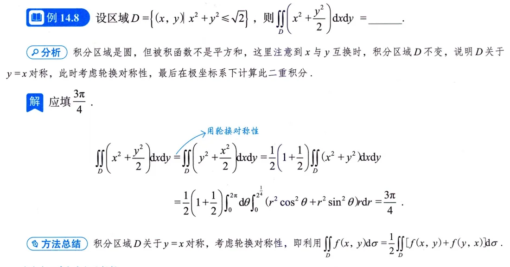
思路：区域 \(D=\{x^2+y^2\le\sqrt2\}\) 是圆，但被积函数 \(x^2+\frac{y^2}{2}\) 不是平方和；\(x,y\) 互换 \(D\) 不变，先轮换对称性凑平方和，再上极坐标。
要点：
\[ \iint_D\Bigl(x^2+\frac{y^2}{2}\Bigr)\mathrm{d}x\,\mathrm{d}y =\iint_D\Bigl(y^2+\frac{x^2}{2}\Bigr)\mathrm{d}x\,\mathrm{d}y =\frac12\Bigl(1+\frac12\Bigr)\iint_D(x^2+y^2)\,\mathrm{d}x\,\mathrm{d}y, \]
极坐标下 \(x^2+y^2=r^2\)、\(D\) 为 \(r\le 2^{1/4}\)（注意半径是 \(\sqrt[4]{2}\)，不是 \(\sqrt2\)）：
\[ \int_0^{2\pi}\mathrm{d}\theta\int_0^{2^{1/4}}r^3\,\mathrm{d}r=2\pi\cdot\frac{2}{4}=\pi\quad\Rightarrow\quad\text{原式}=\frac34\cdot\pi=\frac{3\pi}{4}. \]
注：这就是"区域关于 \(y=x\) 对称，利用 \(\iint f\,\mathrm{d}\sigma=\frac12\iint[f(x,y)+f(y,x)]\,\mathrm{d}\sigma\)"的标准操作。圆域上算 \(\iint x^2\) 或 \(\iint y^2\)，先想这条近路再想硬积。
例 14.9 椭圆环域上的极坐标（书里的复习标杆）
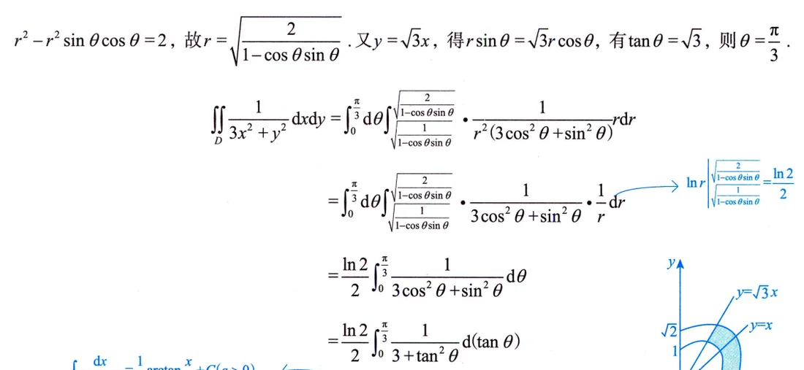
思路：\(D\) 在第一象限，由 \(x^2+y^2-xy=1\)、\(x^2+y^2-xy=2\) 与 \(y=\sqrt3x\)、\(y=0\) 围成。边界方程 \(x,y\) 互换不变，曲线含 \(x^2+y^2\)，被积函数分母有平方和，用极坐标。
要点：把边界化成极坐标：\(x^2+y^2-xy=r^2(1-\cos\theta\sin\theta)\)，两条曲线分别给 \(r=\dfrac{1}{\sqrt{1-\cos\theta\sin\theta}}\) 与 \(r=\sqrt{\dfrac{2}{1-\cos\theta\sin\theta}}\)；由 \(y=\sqrt3x\) 得 \(\tan\theta=\sqrt3\)，即 \(\theta=\dfrac{\pi}{3}\)，另一条边是 \(\theta=0\)。于是
\[ \iint_D\frac{1}{3x^2+y^2}\,\mathrm{d}x\,\mathrm{d}y =\int_0^{\pi/3}\mathrm{d}\theta\int_{1/\sqrt{1-\cos\theta\sin\theta}}^{\sqrt{2/(1-\cos\theta\sin\theta)}}\frac{1}{r^2(3\cos^2\theta+\sin^2\theta)}\cdot r\,\mathrm{d}r \]
内层积出 \(\frac{\ln\sqrt2}{3\cos^2\theta+\sin^2\theta}\)，再除 \(3\cos^2\theta+\sin^2\theta=3(\cos^2\theta+\frac13\sin^2\theta)\)：凑微分 \(\mathrm{d}(\tan\theta)\)，得
\[ \frac{\ln 2}{2}\cdot\frac{1}{\sqrt3}\arctan\frac{\tan\theta}{\sqrt3}\Big|_0^{\pi/3} =\frac{\ln 2}{2}\cdot\frac{1}{\sqrt3}\cdot\frac{\pi}{3} =\frac{\sqrt3\ln 2}{24}\pi . \]
注：书里注给了画这种"不常见曲线"（如 \(x^2+y^2-xy=c\)，其实是斜椭圆）的两个办法——描点法（找与坐标轴、\(y=x\) 的交点连一圈）和二次型正交变换（划到线性代数）；考试时区域不好画，就按 \(D\) 的表达式直接定上下限，本题正是"不画图也能定限"的示范。大观图册里 \(x^2+y^2+xy\le 1\) 一格就是给这类区域练眼的。
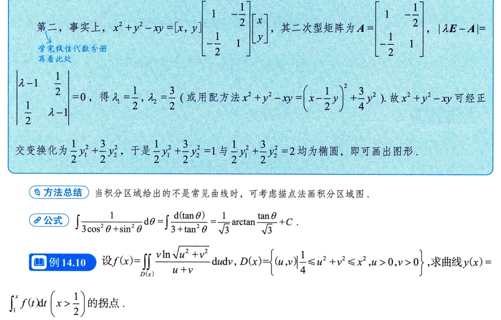
例 14.10 轮换对称性 + 变限积分求导
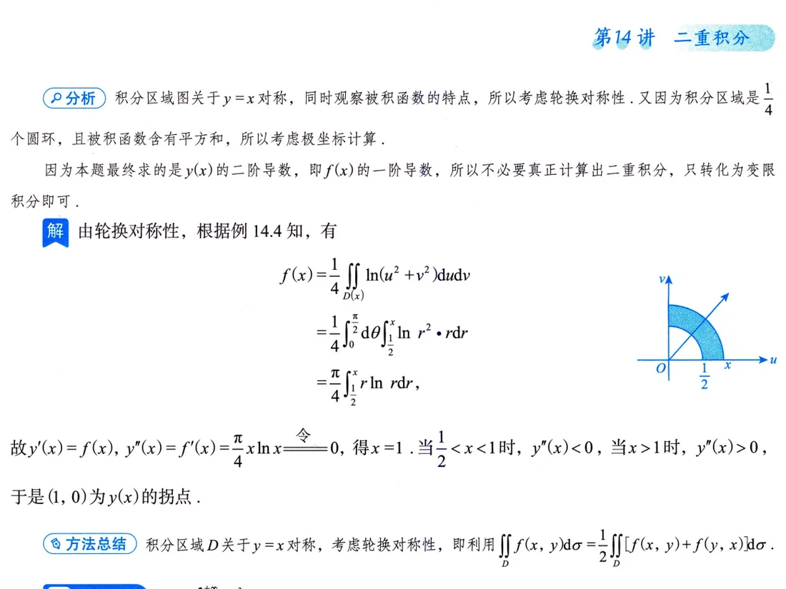
思路：\(f(x)=\displaystyle\iint_{D(x)}\frac{v\ln\sqrt{u^2+v^2}}{u+v}\,\mathrm{d}u\,\mathrm{d}v\)，\(D(x)=\{u^2+v^2\le x^2,\ u\ge0,\ v\ge0\}\) 是第一象限随 \(x\) 扩张的四分之一圆盘。被积函数与例 14.4 同款——先轮换对称性化简；最终要求的是导数而不是积分值，所以没有必要真正算出二重积分，转化为变限积分即可（书里原话的意思就在这）。
要点：由例 14.4 的结论，
\[ f(x)=\frac14\iint_{D(x)}\ln(u^2+v^2)\,\mathrm{d}u\,\mathrm{d}v =\frac14\int_0^{\pi/2}\mathrm{d}\theta\int_0^{x}r\ln r^2\,\mathrm{d}r =\frac{\pi}{8}\int_0^{x}r\ln r^2\,\mathrm{d}r, \]
对变限求导：
\[ f'(x)=\frac{\pi}{8}\,x\ln x^2=\frac{\pi}{4}x\ln x, \]
再求导还有 \(f''(x)=\dfrac{\pi}{4}(\ln x+1)\)。四分之一圆盘上 \(\theta\) 的范围固定是 \([0,\frac\pi2]\)，所以求导时只需要盯住 \(r\) 的上限 \(x\)。
注：这是本讲综合性最强的题之一——轮换对称性（化简被积函数）+ 极坐标（\(D(x)\) 是圆域）+ 变限积分求导（L8 的基本功）三连环，数一数三的解答题就爱这么拼。
例 14.11 高斯积分（概率论的伏笔）
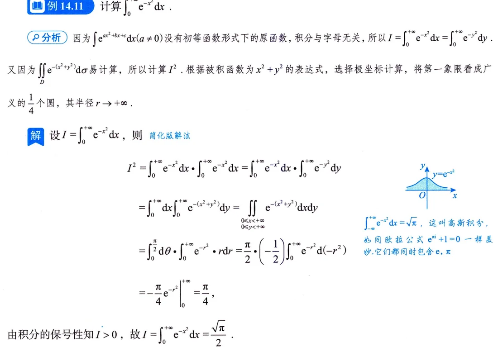
思路：\(\mathrm{e}^{-x^2}\) 没有初等原函数，一维积不动；利用积分与字母无关，平方变成二重积分，再上极坐标。
要点：设 \(I=\displaystyle\int_0^{+\infty}\mathrm{e}^{-x^2}\mathrm{d}x\)，则
\[ I^2=\int_0^{+\infty}\mathrm{e}^{-x^2}\mathrm{d}x\int_0^{+\infty}\mathrm{e}^{-y^2}\mathrm{d}y =\iint_{\substack{0\le x<+\infty\\ 0\le y<+\infty}}\mathrm{e}^{-(x^2+y^2)}\,\mathrm{d}x\,\mathrm{d}y =\int_0^{\pi/2}\mathrm{d}\theta\int_0^{+\infty}\mathrm{e}^{-r^2}\,r\,\mathrm{d}r=\frac{\pi}{4}, \]
（第一象限即 \(\theta\in[0,\frac\pi2]\)；\(\mathrm{e}^{-r^2}r\) 凑 \(\mathrm{d}(r^2)\) 积出 \(\frac12\)）。由保号性 \(I>0\)，故 \(I=\dfrac{\sqrt\pi}{2}\)。
注：这个结果必须记住。题后的方法总结框写的是"积分与字母用谁无关"：\(\iint_{D_{xy}}f(x,y)\,\mathrm{d}x\,\mathrm{d}y=\iint_{D_{yx}}f(y,x)\,\mathrm{d}y\,\mathrm{d}x\)，\(\int_a^b f(x)\,\mathrm{d}x=\int_a^b f(t)\,\mathrm{d}t\)——\(I^2\) 能写成二重积分全靠这一句。
例 14.12 用 \(\Gamma\) 函数算 \(\int_0^{+\infty}x^2\mathrm{e}^{-x^2}\mathrm{d}x\)
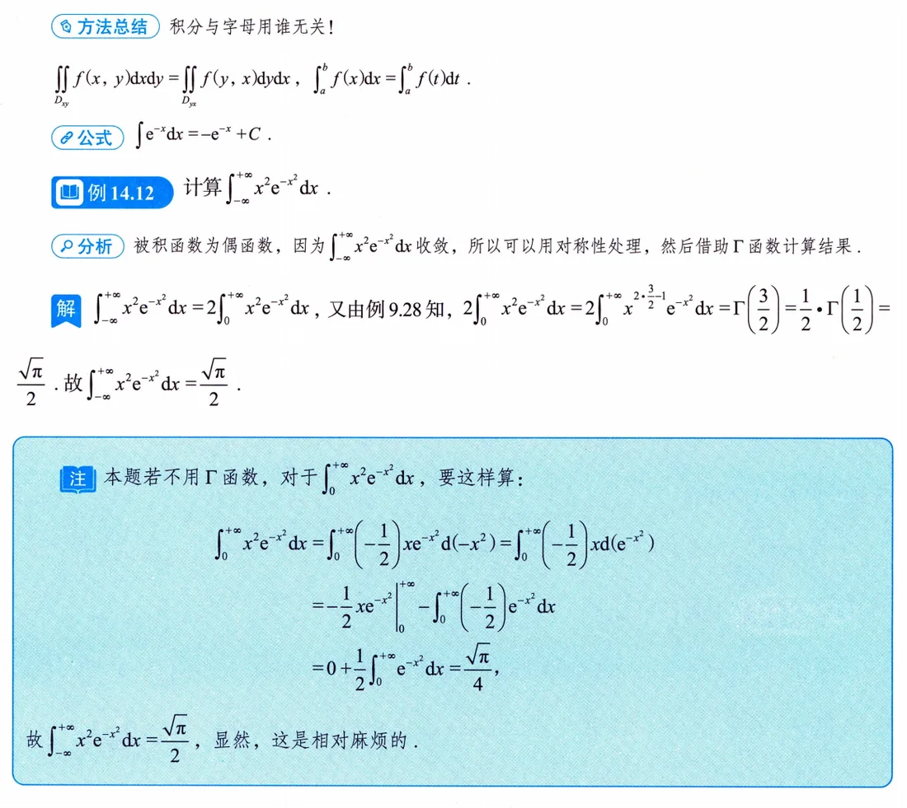
思路：接着例 14.11 的余热，算"平方加权"版。令 \(t=x^2\) 化成 \(\Gamma\) 函数。
要点：
\[ \int_0^{+\infty}x^2\mathrm{e}^{-x^2}\,\mathrm{d}x \xlongequal{\;t=x^2\;}\frac12\int_0^{+\infty}t^{\frac12}\mathrm{e}^{-t}\,\mathrm{d}t =\frac12\Gamma\!\left(\frac32\right) =\frac12\cdot\frac12\,\Gamma\!\left(\frac12\right)=\frac{\sqrt\pi}{4}, \]
用到的递推 \(\Gamma(\alpha+1)=\alpha\Gamma(\alpha)\) 与 \(\Gamma(\frac12)=\sqrt\pi\) 都是 L9 的存货。不用 \(\Gamma\) 函数就分部积分：把 \(x\) 留给微分 \(x\,\mathrm{d}x=\frac12\mathrm{d}(x^2)\)，转化出 \(\int x\,\mathrm{e}^{-x^2}\) 型，麻烦一点但能落同一答案。
注：这对"高斯积分家族"两个数 \(\bigl(\frac{\sqrt\pi}{2},\ \frac{\sqrt\pi}{4}\bigr)\) 一起背，例 14.14、习题里直接引用。
例 14.13 分段函数的二重积分：按分段线拆区域
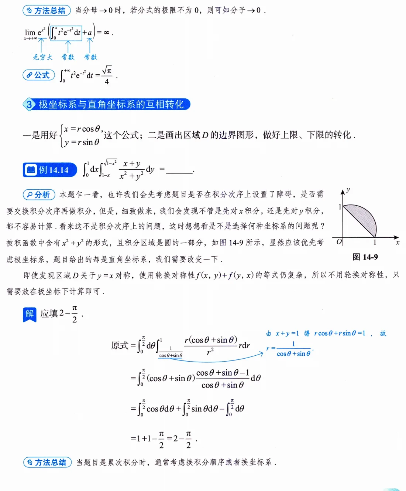
思路：\(f(x)=\begin{cases}1,&0\le x\le1\\ 2x,&1<x\le2\end{cases}\)，\(D=[0,2]\times[0,2]\)，被积函数 \(f(x)f(y)\) 在 \(D\) 上分四种情形。画区域，用分段线 \(x=1\)、\(y=1\) 把 \(D\) 拆成四块，各块分别积分再相加。
要点：四块上的被积函数分别是 \(1\)、\(2y\)、\(2x\)、\(4xy\)：
\[ \iint_D f(x)f(y)\,\mathrm{d}\sigma =\int_0^1\!\mathrm{d}x\!\int_0^1 1\,\mathrm{d}y +\int_0^1\!\mathrm{d}x\!\int_1^2 2y\,\mathrm{d}y +\int_1^2\!\mathrm{d}x\!\int_0^1 2x\,\mathrm{d}y +\int_1^2\!\mathrm{d}x\!\int_1^2 4xy\,\mathrm{d}y =1+3+3+9=16 . \]
矩形域上 \(f(x)f(y)\) 这种"x、y 各管各"的结构，其实等于两个一元积分的乘积 \(\bigl(\int_0^2 f(x)\,\mathrm{d}x\bigr)^2=(1+3)^2=16\)，可当验算的快招。
注：分段函数、绝对值、max/min 三类题是同一族——先按分段点/零点线/比较线切区域，再分块积分（习题 14.9 的 \(|x+y-1|\)、习题 14.12 的 \(\max\{x^2,y^2\}\) 同款手艺）。
例 14.14 洛必达定参数（用例 14.12 的结论）
思路：\(\displaystyle\lim_{x\to+\infty}\frac{\int_0^x t^2\mathrm{e}^{-t^2}\,\mathrm{d}t-\frac{\sqrt\pi}{4}}{x^b\,\mathrm{e}^{-x^2}}\)。分子由例 14.12 知趋于 \(0\)（\(\int_0^x t^2\mathrm{e}^{-t^2}\mathrm{d}t\to\frac{\sqrt\pi}{4}\)，且从下方逼近），分母也趋于 0，是 \(\frac00\) 型，洛必达后比较幂次定 \(b\)。
要点：
\[ \lim_{x\to+\infty}\frac{\int_0^x t^2\mathrm{e}^{-t^2}\,\mathrm{d}t-\frac{\sqrt\pi}{4}}{x^b\mathrm{e}^{-x^2}} \xlongequal{\text{洛}}\lim_{x\to+\infty}\frac{x^2\mathrm{e}^{-x^2}}{\left(bx^{b-1}-2x^{b+1}\right)\mathrm{e}^{-x^2}} =\lim_{x\to+\infty}\frac{x^{3-b}}{b-2x^2}. \]
分母 \(\sim-2x^2\)，要极限存在且非零，分子必须同阶，即 \(3-b=2\)，\(b=1\)；代回得极限 \(-\dfrac12\)（分子恒负、分母恒正，符号也对得上）。
注：这类题把"积不出的函数"塞进变限积分再问极限，例 14.6 是换序路线、本题是洛必达路线，两条路都通向"先认清 \(\int_0^{+\infty}\) 的值"。
例 14.15 换元法算 \(\mathrm{e}^{y/(x+y)}\)
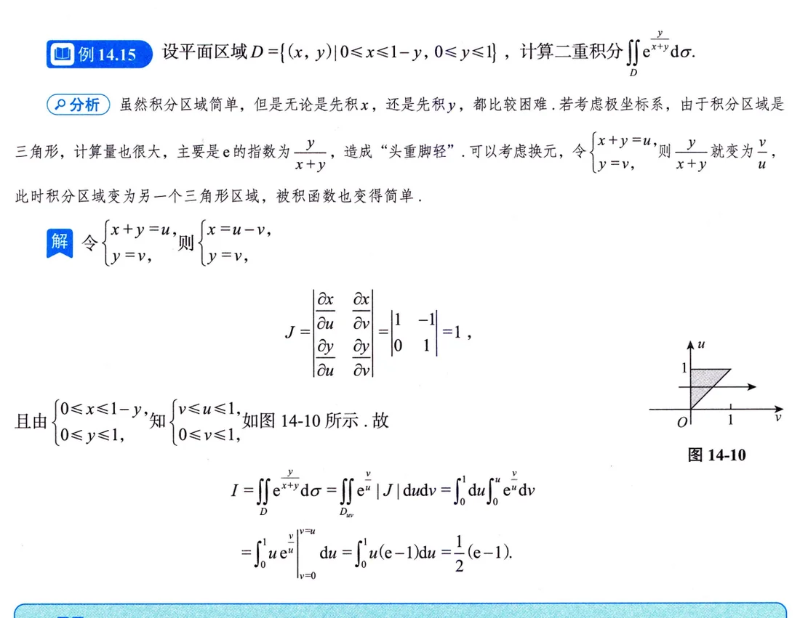
思路：\(D=\{(x,y)\mid 0\le x\le 1-y,\ 0\le y\le 1\}\) 是三角形，但无论先积 \(x\) 还是先积 \(y\)，\(\mathrm{e}^{\frac{y}{x+y}}\) 都很困难；极坐标下区域也不讨好。指数上的分式 \(\frac{y}{x+y}\) 提示换元 \(u=x+y,\ v=y\)。
要点：解出 \(x=u-v,\ y=v\)，雅可比行列式
\[ \frac{\partial(x,y)}{\partial(u,v)}= \begin{vmatrix}1&-1\\0&1\end{vmatrix}=1,\qquad \mathrm{e}^{\frac{y}{x+y}}=\mathrm{e}^{\frac{v}{u}}, \]
区域：\(0\le y\le1,\ 0\le x\le1-y\ \Rightarrow\ 0\le v\le u\le1\)（三角形换到 \(uv\) 平面还是三角形）。于是
\[ \iint_D\mathrm{e}^{\frac{y}{x+y}}\,\mathrm{d}\sigma =\int_0^1\mathrm{d}u\int_0^u \mathrm{e}^{\frac{v}{u}}\,\mathrm{d}v =\int_0^1 u\left(\mathrm{e}-1\right)\mathrm{d}u =\frac{\mathrm{e}-1}{2}, \]
内层对 \(v\) 积分时 \(\frac1u\) 是常数，\(\int_0^u\mathrm{e}^{v/u}\,\mathrm{d}v=u(\mathrm{e}-1)\)。
注：书里的方法总结：被积函数出现"头重脚轻"的指数（\(\mathrm{e}^{\frac{y}{x+y}}\)、\(\mathrm{e}^{\frac{x}{x+y}}\) 这类）时，取 \(u=x+y,\ v=y\)（或 \(v=x\)）特别有效。换元后 \(D\) 的边界 \(x+y=1\) 变成 \(u=1\)，\(y=0\) 变成 \(v=0\)，斜边拉直成坐标轴——这是换元法"化斜为直"的典型收益。
习题精选提示（印 P412–418）
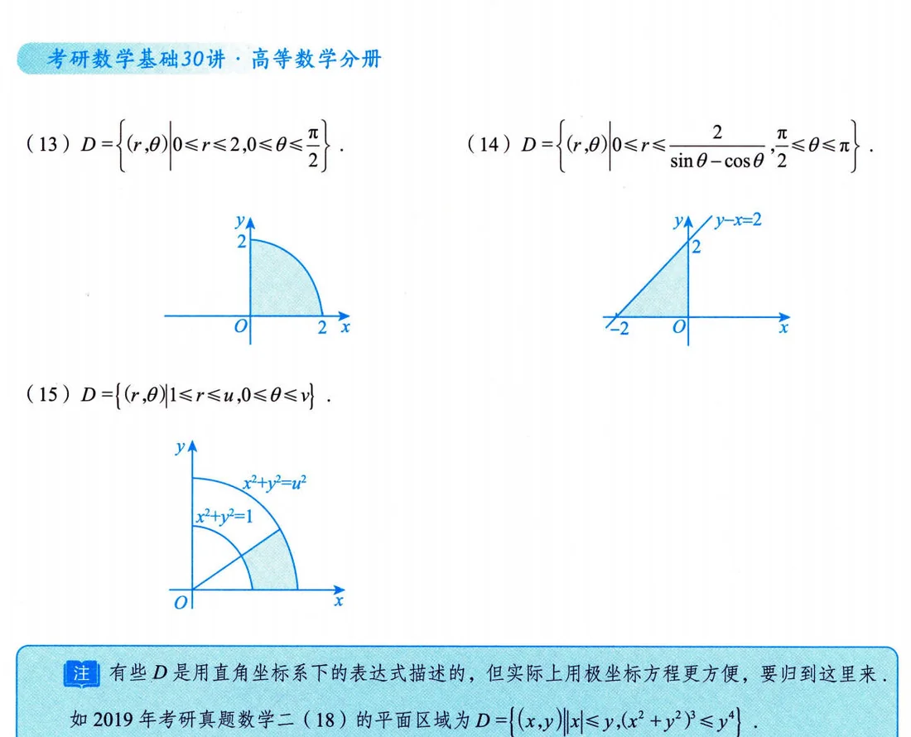
- 习题14.1 计算 \(\displaystyle\iint_D x\,\mathrm{d}\sigma\)，\(D\) 由 \(y^2=x\) 与 \(y=x-2\) 围成。联立解出交点 \((1,-1)\)、\((4,2)\)；若按 X 型要拆两块，按 Y 型一块搞定：\(D=\{-1\le y\le2,\ y^2\le x\le y+2\}\)，\(\displaystyle\int_{-1}^{2}\mathrm{d}y\int_{y^2}^{y+2}x\,\mathrm{d}x=\frac{36}{5}\)——"抛物线横放优先 Y 型"是这题的教训（印P412）；
- 习题14.2 选择题：\(D=\{x^2+y^2\le1\}\)，问 \(\iint_D x\,\mathrm{d}\sigma\) 与 \(\iint_D y\,\mathrm{d}\sigma\) 的关系。\(D\) 关于两轴都对称，\(x\)、\(y\) 各是（关于自身的）奇函数，两个积分都是 0，选说"\(\iint_D x\,\mathrm{d}\sigma=\iint_D y\,\mathrm{d}\sigma=0\)"的那项（印P413）；
- 习题14.3 交换积分次序专项训练一组，如 \(\int_0^1\mathrm{d}x\int_0^x f\,\mathrm{d}y=\int_0^1\mathrm{d}y\int_y^1 f\,\mathrm{d}x\)、\(\int_0^1\mathrm{d}x\int_{x^2}^1 f\,\mathrm{d}y=\int_0^1\mathrm{d}y\int_0^{\sqrt y} f\,\mathrm{d}x\) 等，练"还原区域—画图—重新定限"的肌肉（印P413）；
- 习题14.6 \(D=\{x^2+y^2\le2\}\)，算 \(\iint_D(x+y)^2\,\mathrm{d}\sigma\)。展开后交叉项 \(2xy\) 是奇函数归零，剩 \(\iint_D(x^2+y^2)\,\mathrm{d}\sigma=\int_0^{2\pi}\mathrm{d}\theta\int_0^{\sqrt2}r^3\,\mathrm{d}r=2\pi\)（印P414）；
- 习题14.8 计算 \(\displaystyle\iint_D\frac{\sin y}{y}\,\mathrm{d}\sigma\)，\(D\) 由 \(y=\sqrt x\) 与 \(y=x\) 围成。\(\frac{\sin y}{y}\) 对 \(y\) 积不出，先积 \(x\)：\(D=\{0\le y\le1,\ y^2\le x\le y\}\)，\(\int_0^1\frac{\sin y}{y}(y-y^2)\,\mathrm{d}y=\int_0^1(1-y)\sin y\,\mathrm{d}y=1-\sin1\)（印P415）；
- 习题14.9 \(\displaystyle\iint_D|x+y-1|\,\mathrm{d}\sigma\)，\(D=[0,1]\times[0,1]\)。用零点线 \(x+y=1\) 拆上下两块，分别去绝对值，各积出 \(\frac16\)，合计 \(\frac13\)（印P416）；
- 习题14.11 被积函数 \(\sqrt{\dfrac{1-x^2-y^2}{1+x^2+y^2}}\) 型：极坐标后根号里只剩 \(r\)，凑 \(r\,\mathrm{d}r=\frac12\mathrm{d}(r^2)\)，再令 \(u=r^2\) 把根号分式有理化（\(\sqrt{\frac{1-u}{1+u}}=\frac{1-u}{\sqrt{1-u^2}}\)）拆成 \(\arcsin\) 与 \(\sqrt{1-u^2}\) 两项——极坐标+两次凑微分的标准连招（印P417）；
- 习题14.12 \(\displaystyle\iint_D\max\{x^2,y^2\}\,\mathrm{d}\sigma\)，\(D=[0,1]\times[0,1]\)。用比较线 \(y=x\) 拆两块，\(y\ge x\) 处取 \(y^2\)、\(y\le x\) 处取 \(x^2\)；两块关于 \(y=x\) 对称，故 \(I=2\int_0^1\mathrm{d}y\int_0^y y^2\,\mathrm{d}x=2\int_0^1y^3\,\mathrm{d}y=\frac12\)（印P418）。
易错点与技巧
- 对称性要"两个条件都占"：区域对称 + 函数代入对称点后相等/相反。只看区域不想函数，或者只看函数不看区域，都会翻车（印P387–388）。
- 分不清普通对称性④和轮换对称性时记住：都要求 \(D\) 关于 \(y=x\) 对称；前者看 \(f(x,y)\) 与 \(f(y,x)\) 相等还是相反，后者看 \(f(x,y)+f(y,x)\) 好不好算（印P390–391）。
- 极坐标千万别丢 \(r\)：\(\mathrm{d}\sigma=r\,\mathrm{d}r\,\mathrm{d}\theta\)，书里旁注原话就是"\(r\) 最容易丢"（印P394）。
- 下限必须不超过上限，因为 \(\mathrm{d}x,\mathrm{d}y,\mathrm{d}\sigma>0\)；交换上下限要添负号（印P392），例 14.6 第一步就是现场添负号。
- 看到 \(\frac{\sin x}{x}\)、\(\mathrm{e}^{-x^2}\)、\(\sin x^2\)、\(\frac{1}{\ln x}\) 这类积分，条件反射——交换积分次序（印P393）；一维积不出的 \(\mathrm{e}^{-x^2}\) 还有第二条路：平方化二重积分上极坐标（例 14.11）。
- 极坐标定 \(\theta\)：从 \(Ox\) 轴逆时针出发，先进入区域的是下限 \(\alpha\)，离开的是上限 \(\beta\)；一般先积 \(r\) 后积 \(\theta\)（印P394）。
- 区域是圆但被积函数不是平方和时，先想想轮换对称性能不能凑出 \(x^2+y^2\)（例 14.8 的套路，印P395）；圆域上 \(\iint x^2\)、\(\iint y^2\) 都可以先轮换取平均。
- 想让 \(\iint_D f\,\mathrm{d}\sigma\) 最大，就取 \(f\ge 0\) 的整个区域，混进 \(f<0\) 的部分只会拉低积分（例 14.1 的注，印P386）。
- 换序别"直接换限"：一定先由累次积分还原 \(D\) 并画图，再重新投影；在 \([\frac\pi2,\pi]\) 上反解 \(\sin x=y\) 得 \(x=\pi-\arcsin y\)，不是 \(\arcsin y\)（例 14.5，印P392–393）。
- 中值定理的 \((\xi,\eta)\) 随区域变动：\(F(t)=S_D(t)\cdot f(\xi,\eta)\) 里 \((\xi,\eta)\in D(t)\)，求 \(t\to0^+\) 的极限时要靠连续性把它送回 \(f(0,0)\)，不能当常数提出来（例 14.2，印P386–387）。
- 分段函数、绝对值、\(\max/\min\) 的二重积分，第一步永远是找分段线/零点线/比较线切区域，分块积分再相加（例 14.13、习题 14.9、习题 14.12，印P399、P416、P418）。
- 抛物线横放（\(y^2=x\)）的区域优先 Y 型定限，省得拆块；斜的边界（\(x+y=1\)）难受时考虑换元 \(u=x+y\) 把它拉直（习题 14.1、例 14.15，印P412、P400–401）。
- 极坐标下 \(r\) 的上限是 \(\theta\) 的函数时，别把 \(\int r^2\,\mathrm{d}r\) 类内层积分的 \(\theta\) 当变量乱提；内层积完后 \(\theta\) 才开始上场（例 14.9、习题 14.11，印P396、P417）。
- 大观图册"不是背的，而是训练画区域能力的素材"（原话）：画图四步——认边界类型、联立找交点、判对称性、连草图；斜椭圆、双纽线直角形式认不出时，描点法保底（印P402、P396 注）。
考点与方法补充（站注）
以下均为站注，不是原书内容；数学事实以原书为准。
- 站注·真题大数据：二重积分计算属第一梯队考点（新东方近 15 年真题统计，几乎每年必考；第一梯队板块合计约占高数分值 60%+），本讲三大神器就是交换积分次序、极坐标、对称性（奇偶性+轮换性）。本讲开头"考研要求"表也印证：题型一栏填的是"解答题"，重难点是"计算二重积分"——所以这讲的重心不在证明而在算对。
- 站注·命题趋势：跨章节综合题比重上升、积分计算复杂度持续走高（多次换元）。落到本讲：一道题里连环出手已是常态——例 14.10（轮换+极坐标+变限求导）、例 14.14（变限积分+洛必达）、习题 14.11（极坐标+两重凑微分）都是"单点知识、组合出题"的样板。
- 站注·方法论（动手算）：张宇反复强调"尽快结束纯听课阶段，自己动手最重要"、计算能力是决定分数的第一因素。杨超把求极限、求导、求积分叫"三大计算"（这是杨超的提法，别记到张宇头上）；二重积分正是"求积分"这条线的收官，例题遮住答案亲手算一遍，比把 15 道例题"看懂"十遍有用。
- 站注·先判型后计算：张宇强化 36 讲第 1 讲主题即"判定类型，做好计算"。本讲的判型清单：拿到 \(\iint_D f\,\mathrm{d}\sigma\) 先问三件事——①区域/函数有没有对称性可白拿（普通对称性→轮换对称性按序查）？②坐标系选直角还是极坐标（被积函数 \(x^2+y^2\)、\(\frac yx\) 型 or 圆域）？③次序怎么排（积不出清单触发换序）？判型对了，八成的计算量已经省下。
- 站注·试卷结构：数学一/三中高数占 56%（约 82/150 分）、数学二占 78%；卷面 150 分 180 分钟。二重积分数一二三都考，是三张卷公共的大题支点——复习优先级照此排。
- 站注·真题与配套使用：至少做近十年真题；自检标准——随机抽 5 道大题独立完成、正确率 ≥90%。基础阶段《基础30讲》配《300题》练习画图与定限，强化阶段《高数18讲》+《1000题》里同一套神器会遇到更难的组合。
- 站注·前后讲衔接：本讲上承 L8/L9——变限积分求导（例 14.2、14.10、14.14 全在用）、\(\Gamma\) 函数与点火公式（例 14.12、自测题 6）、反常积分（高斯积分）；横向连 L13（例 14.2 的 \(f(0,0)=-\frac13\) 直接引用例 13.2，多元极值问题里也常嵌二重积分）；向下开 L18——数一的曲线曲面积分（格林、高斯）最终都化归为二重积分计算，素材包对 L18 的考频标注是"不复习直接丢 10 分+"，而它的计算内核就是本讲。本讲练不熟，L18 每道题都慢三拍。
- 站注·高斯积分的去处：\(\int_0^{+\infty}\mathrm{e}^{-x^2}\mathrm{d}x=\frac{\sqrt\pi}{2}\) 在概率论正态分布密度归一化、各阶矩计算中是地基级结论，数一数三概率部分会反复引用——本讲例 14.11/14.12 是第一次正面拿下它。
知识清单自测
自测题
1. 交换积分次序：\(\displaystyle\int_0^1\mathrm{d}y\int_{\sqrt y}^{\sqrt{2-y^2}}f(x,y)\,\mathrm{d}x\)。
查看答案
解：区域 \(D=\{(x,y)\mid 0\le y\le 1,\ \sqrt y\le x\le\sqrt{2-y^2}\}\)，边界为抛物线 \(y=x^2\)（即 \(x=\sqrt y\)）与圆 \(x^2+y^2=2\)（即 \(x=\sqrt{2-y^2}\)），联立解得交点 \((1,1)\)。改成后积 \(y\)，需拆成两块：
\[ \int_0^1\mathrm{d}x\int_0^{x^2}f(x,y)\,\mathrm{d}y+\int_1^{\sqrt2}\mathrm{d}x\int_0^{\sqrt{2-x^2}}f(x,y)\,\mathrm{d}y . \]
2. 设 \(D=\{(x,y)\mid x^2+y^2\le 1\}\)，计算 \(\displaystyle I=\iint_D(x^2y+x+y+3)\,\mathrm{d}\sigma\)。
查看答案
解：\(D\) 关于 \(y\) 轴、\(x\) 轴都对称。\(x^2y\) 关于 \(y\) 是奇函数，积分为 0；\(x\) 关于 \(x\) 是奇函数、\(y\) 关于 \(y\) 是奇函数，积分也都是 0。只剩
\[ I=3\iint_D\mathrm{d}\sigma=3\pi . \]
3. 计算 \(\displaystyle\iint_D\sqrt{x^2+y^2}\,\mathrm{d}\sigma\)，其中 \(D=\{(x,y)\mid 1\le x^2+y^2\le 4,\ y\ge 0\}\)。
查看答案
解：被积函数含 \(x^2+y^2\)，区域是上半圆环（极点在区域外部），用极坐标：
\[ \iint_D\sqrt{x^2+y^2}\,\mathrm{d}\sigma=\int_0^{\pi}\mathrm{d}\theta\int_1^2 r\cdot r\,\mathrm{d}r =\pi\cdot\frac{7}{3}=\frac{7\pi}{3}. \]
4. 设 \(D=\{(x,y)\mid x^2+y^2\le 1\}\)，计算 \(\displaystyle I=\iint_D(2x^2+3y^2)\,\mathrm{d}\sigma\)。
查看答案
解：\(D\) 关于 \(y=x\) 对称，由轮换对称性 \(\iint_D y^2\,\mathrm{d}\sigma=\iint_D x^2\,\mathrm{d}\sigma\)，于是
\[ I=2\iint_D(2y^2+3x^2)\,\mathrm{d}\sigma=5\iint_D(x^2+y^2)\,\mathrm{d}\sigma, \]
即 \(I=\dfrac52\iint_D(x^2+y^2)\,\mathrm{d}\sigma\)。极坐标：
\[ I=\frac52\int_0^{2\pi}\mathrm{d}\theta\int_0^1 r^3\,\mathrm{d}r=\frac52\cdot 2\pi\cdot\frac14=\frac{5\pi}{4}. \]
5. 估计 \(I=\displaystyle\iint_D\frac{\mathrm{d}\sigma}{100+\cos^2 x+\cos^2 y}\) 的范围，其中 \(D=\{(x,y)\mid |x|+|y|\le 10\}\)。
查看答案
解：由估值定理，\(\cos^2 x+\cos^2 y\in[0,2]\)，故被积函数介于 \(\dfrac{1}{102}\) 与 \(\dfrac{1}{100}\) 之间。\(D\) 是对角线长 20 的正方形（菱形），面积 \(A=\dfrac12\cdot 20\cdot 20=200\)，所以
\[ \frac{200}{102}\le I\le\frac{200}{100},\qquad\text{即}\quad \frac{100}{51}\le I\le 2 . \]
6. 计算 \(\displaystyle I=\iint_D\sqrt{x^2+y^2}\,\mathrm{d}\sigma\)，其中 \(D=\{(x,y)\mid x^2+y^2\le 2x\}\)。
查看答案
解：\(D\) 是圆心 \((1,0)\)、半径 1 的圆——极点在边界上的典型情形。极坐标下边界 \(x^2+y^2=2x\) 化为 \(r=2\cos\theta\)，\(\theta\in[-\frac{\pi}{2},\frac{\pi}{2}]\)，\(r\) 从 0 积到 \(2\cos\theta\)：
\[ I=\int_{-\pi/2}^{\pi/2}\mathrm{d}\theta\int_0^{2\cos\theta}r\cdot r\,\mathrm{d}r =\int_{-\pi/2}^{\pi/2}\frac{8}{3}\cos^3\theta\,\mathrm{d}\theta =\frac{8}{3}\cdot 2\cdot\frac{2}{3}=\frac{32}{9}, \]
其中 \(\int_0^{\pi/2}\cos^3\theta\,\mathrm{d}\theta=\frac23\) 是点火（华里士）公式。